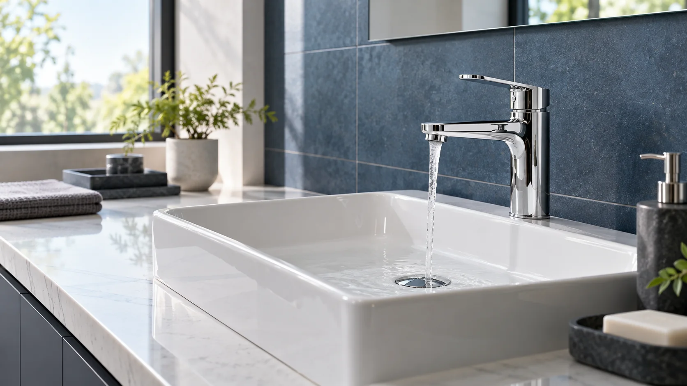
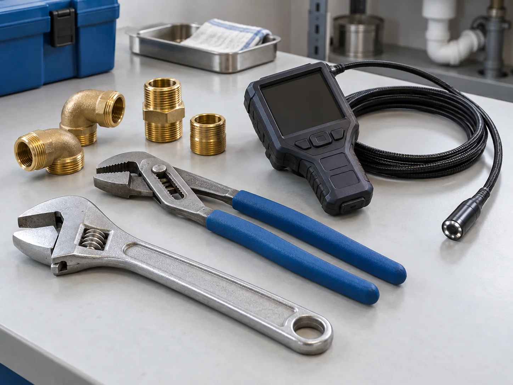

水漏れ修理
蛇口や配管など、水まわりの水漏れについてご相談を承ります。
漏れる・水が止まらないWATER CARE / KANSAI
大阪・関西の水まわりに。
水漏れ・排水の詰まりから、
見えない場所の漏水調査まで。
EIMEIが水まわりのご相談を承ります。
管理会社さま・ご紹介先へのご案内にも。

作業の前に、
内容と料金を確認。
01 / REPAIR & MAINTENANCE
水漏れ、流れにくい排水、設備の交換。
気になる症状からご相談ください。
蛇口や配管など、水まわりの水漏れについてご相談を承ります。
漏れる・水が止まらない排水の詰まりに対応。高圧洗浄についてもご相談いただけます。
詰まる・流れにくい蛇口をはじめ、水まわり設備の交換についてご相談を承ります。
設備を交換したい
02 / LEAK INVESTIGATION
トレーサーガスによる漏水調査
水漏れの修理だけでなく、漏水箇所を調べるためのご相談にも対応しています。原因や場所がわからない場合も、まずは状況をお聞かせください。
調査方法・対応可否・作業内容は、現場の状況を確認したうえでご案内します。
03 / SERVICE AREA
建物の所在地とお困りの内容をお知らせください。
具体的な対応可否や訪問日程は、ご相談時に確認します。
04 / HOW IT WORKS
症状・建物の所在地・気になる箇所などを確認します。
作業前に内容と料金をお伝えします。お見積もりは無料です。
内容をご確認いただいたうえで、作業を開始します。
LET’S TALK
水まわり修理も、漏水調査も。
ご相談内容の整理をお手伝いします。
EIMEI 担当：小笠原
送信されない画面デモです。
実際の電話・メールには接続しません。